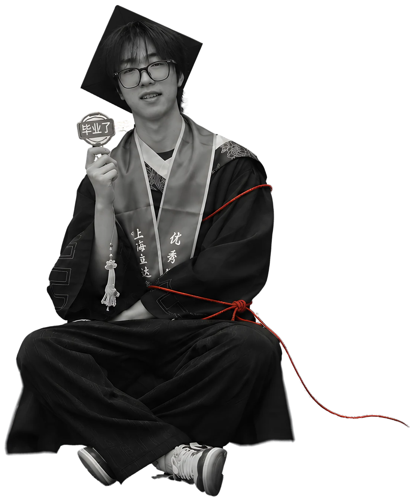

CULTURAL PRODUCT DESIGN / 2026
场景作品猴山 · 磁吸互动摆件
PROJECT INDEX
作品索引Selected projects
STUDIO NOTES
创作手记

DESIGNER PROFILE
何星霆
文创设计 · 平面设计
- 教育
- 上海立达学院 · 视觉传达设计2022.09 — 2026.06
- 实习
- 上海领健医疗科技有限公司2025.06 — 2025.09
品牌海报、活动主视觉与宣传物料延展，独立完成多套活动视觉方案。
- 工具
- Photoshop / Illustrator
Midjourney / Stable Diffusion - 荣誉
- 中华设计奖金奖、未来设计师全国一等奖上海市优秀毕业生